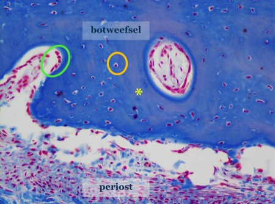

Typering van ‘bot’ of ‘beenweefsel’ in lichtmicroscopische preparaten.
Om structuren in bot te benoemen gebruiken we ‘osteo-‘ in woordsamenstellingen.
Botweefsel bestaat uit botcellen en extracellulaire matrix. Net zoals kraakbeen is bot aan de buitenzijde omgeven met een bindweefsel‘vlies’, het periost.

Overzichtsfoto van een stukje botweefsel, omgeven met periost. Wat vooral opvalt is de extracellulaire matrix van het bot (gele asterisk), welke hier een blauwe kleur heeft. Een groepje botvormende cellen tegen het bot aan is met groen omcirkeld. De oranje cirkel duidt een volwassen botcel aan in een lacune.
Aan het einde van dit zelfstudiepakket…
1) … kan je in een lichtmicroscopisch beeld of preparaat botweefsel herkennen, de samenstellende componenten ervan beschrijven en aanduiden;
2) … kan je de verschillende botcellen van elkaar onderscheiden, en kan je in enkele woorden hun functie uitleggen.
3) … kan je onderscheid maken tussen compact lamellair en spongieus lamellair bot op basis van de organisatie van de lamellen;
4) … kan je de verschillende stadia van enchondrale botvorming beschrijven en aanduiden op een lichtmicroscopisch beeld of in een preparaat;